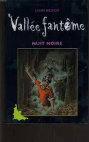

2015
Août
- 29 — Les espaces et les caractères typographiques
- 28 — Les 100 de Kass Morgan
- 26 — Les lumières de Laureline, nouvelle revisitée
- 23 — Les lumières de Laureline, nouvelle
- 14 — Les visages de Dieu de Mallock
-
14 —
Dernières lectures

 Nuit noire (Lynn Beach), Grey (E.L. James), Les menteuses (Sara Shepard)
Nuit noire (Lynn Beach), Grey (E.L. James), Les menteuses (Sara Shepard) - 01 — 💖 Orgueil et préjugés de Jane Austen
Juillet
- 29 — Geisha d’Arthur Golden
- 13 — 💖 L’appel du coucou de Robert Galbraith
- 07 — 💖 De bons présages de Terry Pratchett et Neil gaiman
Juin
Mai
- 22 — Trésor et maquillage, court texte
- 19 — Dragon et plancton, court texte
- 15 — Samare : ma trilogie de fantasy
- 05 — Langages (par Diatomée)
-
02 —
Mes lectures récentes
Le fabuleux Maurice et ses rongeurs savants (Terry Pratchett), Journal d’un écrivain en pyjama (Dany Laferrière), L’apprenti épouvanteur (Joseph Delaney)
- 02 — La face cachée de Margo de John Green